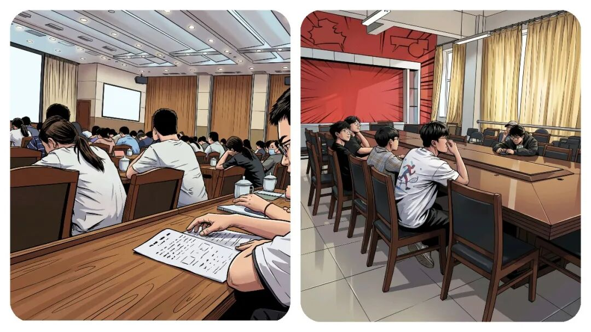
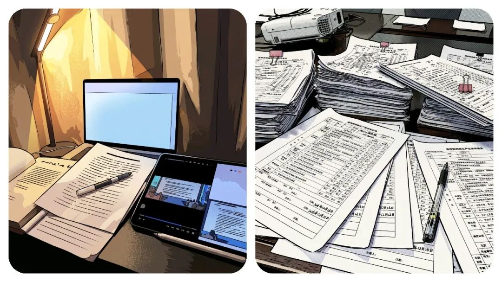
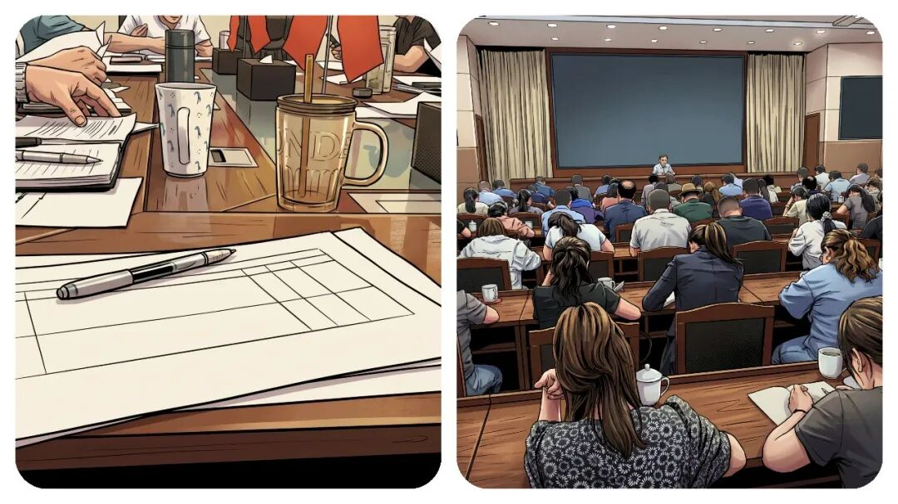

你知道，“乡镇干部”一天到底都在忙什么？聊聊最累的 3 项工作。
原创
点击关注👉🏻
点击关注👉🏻
田间烟火
在小说阅读器读本章
去阅读
在小说阅读器中沉浸阅读
点击上方
蓝字
关注我们
田间烟火🔥
大家好，我是【田间烟火🔥】～
我相信大家身处体制内，见到大家吐槽最多的问题其实不是事情难做，而是
环环相扣的流程
、
重复的汇报
和
各种会议
让人心累。
很多人说，真正花在干事的时间，其实只占一小部分，剩下的精力都消耗在“
写方案
、
走流程
、
做总结
”这些环节，
到底怎么回事？
01
三类常见的流程消耗
重复超长的书面汇报
本来简简单单讲一件事，可能3分钟就能讲清楚。
可汇报起来非要搞成几页纸。
先说这项任务有多重要，然后再分点讲措施，既要“
上高度
”，又要“
戴帽子
”，最后还要
展望未来
。
每个角落都必须
留痕
，
记录
，
存档
，
每句话都要有依据和佐证
。
看起来挺严谨，实际上不少内容都
没人真去落实
，只为流程而办。
大同小异的重复报表
报表也是个非常累的烦恼。
一份数据，今天报，明天再报，单位报了还要层层上传
。
报的内容其实大同小异，表格却换着花样要填，改个表头或者换个行列序，继续下发填报。
有人调侃，报到最后，数字怎么来的自己都说不清
。
有些报表设计得离谱，基层只能硬着头皮凑数字。
这种情况在乡镇基层可以说是前几年的常态，
结果呢，大家都在想办法应付
，却没有时间深究数据背后真正的问题。
形式繁琐的无效会议
还有会议，原本一通电话就能解决的小事，非得开会。
会前要写
方案
、准备
讲话稿
，
通知
参会名单，安排
会务人员
，场地布置都得细致安排。
一场会议下来，前后准备比实际讨论还要花大力气。
汇报标准要统一，材料要精致，甚至连发言顺序都要敲定
。
这套流程让不少人直呼
“抓主要的事没时间，做配套的事花精力”
。

02
“流程疲劳”的成因与现状
曾有人描述，自己一周干实事顶多半天，其余时间全
用在
文书工作
、
流程梳理
、
各种会议
。
其实不只体制内，很多企业也有类似苦恼。
有些互联网公司，明明项目能快速上线，但每次立项、评审、总结都要做厚厚一份文档，领导要看到“
理由、目标、下一步”
，一天下来也疲惫。
不过在企业内，一旦业绩有压力，流程容易被割掉，
体制内却常常“流程为王”
。
有些报表，设计得还算合理，填报周期不长，
数据要求贴合基层实际
。
有的人干脆用Ai程序自动生成数据报送，省时省力。
流程优化也有些单位开始尝试，开始推动“
减负增效
”，
会议材料合并精简，汇报只抓关键点
。
但这种变化还只是个别试点，要想全行业推广还得慢慢推行。
说到底，大多数人其实更
喜欢直接干事
，
结果清楚，流程简洁
。
但现实中，“
留痕管理”“监督整改
”成了刚需。
像一些督办任务，每一步都要有
材料存档，方便检查
。
没人敢省略，不然出问题问责就没话说
。
于是各级负责人其实也被流程绑住，不能随意简化。
不少人希望能
“做事多于做材料”
，但压力还在。

每年考核、绩效、目标任务一到，各种
总结汇报立刻加码
。
想躲都躲不了。
每个人都得
边干边写，边报边改。
有时一份材料来回修改，牵涉十几个人，效率谁都懂是什么样子的。
这些现象并非中国独有，国外也有些跟我们相似的问题。
像国外一些传统企业，也常有
汇报流程严密、会议繁多
的问题，员工把大量时间耗在
报告
和
例会
上。
一些行政机构也有“
痕迹留存”
文化，但会为效率做优化，用电子化管理取代纸面总结。
不过体制内
“
流程加码”
的现象，还是更突出些。

03
流程优化仍在进行中
也有人提出：
制度严谨、流程规范本身没问题，关键在于怎么兼顾效率与合规。
像每次遇到突发事件或者应急事件，
流程能否灵活调整
、
材料能否简化
、
会议能否线上解决
，这些都是实际考验。
目前，从上到下都在谈“
减负
”，也有单位尝试推进“
无纸化办公
、
自动化报送”
。
也有的地区开发了
报表合并系统，减少重复填报
。
流程慢慢在优化，但距离“只用20%精力完成真正工作”的方案，
还远得很。
有些乡镇基层单位因为
任务清晰，工作量不重，反而没那么多文书折腾
。
像乡村卫生所，平时不需要报太多复杂数据，会议也更为简短。
遇到重大任务需合规操作时，才会体验“
流程疲劳
”。
这算是“
流程压力
”的边界样本，说明流程累并不是所有人都一样深。
最后还是那句，大家想看到变化，想真正把精力花在干事上。
不管是流程瘦身还是制度创新，都得一步步来。
眼下，体制内大多数人还在“
90%时间跑流程
”的路上，想要改变，还得再等等。
如果您经常加班或者熬夜，到了晚上还是难以入眠，睡觉多梦比较多，可以试试下面这款👇🏻：睡前喝一杯！
身处乡镇基层岗位，你每天花在走流程、写材料的时间占比多少？
不妨聊聊真实感受～
分享
收藏
点赞
在看